산업안전기사 (2017-08-26 기출문제)
1과목: 안전관리론
1. A 사업장의 강도율이 2.5이고, 연간 재해발생 건수가 12건, 연간 총 근로 시간수가 120만 시간 일 때 이 사업장의 종합재해지수는 약 얼마인가?
- 1.6
- 5.0
- 27.6
- 230
(정답률: 60%)

2. 재해발생시 조치순서 중 재해조사 단계에서 실시하는 내용으로 옳은 것은?
- 현장보존
- 관계자에게 통보
- 잠재재해 위험요인의 색출
- 피해자의 응급조치
(정답률: 66%)
3. 위치, 순서, 패턴, 형상, 기억오류 등 외부적 요인에 의해 나타나는 것은?
- 메트로놈
- 리스크테이킹
- 부주의
- 착오
(정답률: 79%)
4. 학습지도 형태 중 다음 토의법 유형에 대한 설명으로 옳은 것은?
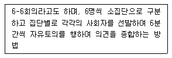
- 버즈세션(Buzz session)
- 포럼(Forum)
- 심포지엄(Symposium)
- 패널 디스커션(Panel discussion)
(정답률: 88%)
5. 하인리히의 재해발생 이론은 다음과 같이 표현할 수 있다. 이 때 α 가 의미하는 것으로 옳은 것은?
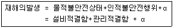
- 노출된 위험의 상태
- 재해의 직접원인
- 재해의 간접원인
- 잠재된 위험의 상태
(정답률: 83%)
6. 브레인스토밍(Brain-storming) 기법의 4원칙에 관한 설명으로 틀린 것은?
- 한 사람이 많은 의견을 제시할 수 있다.
- 타인의 의견을 수정하여 발언할 수 있다.
- 타인의 의견에 대하여 비판, 비평하지 않는다.
- 의견을 발언할 때에는 주어진 요건에 맞추어 발언한다.
(정답률: 87%)
7. 재해원인 분석방법의 통계적 원인분석 중 사고의 유형, 기안물 등 분류항목을 큰 순서대로 도표화한 것은?
- 파레토도
- 특성요인도
- 크로스도
- 관리도
(정답률: 77%)
8. 산업안전보건법령상 안전ㆍ보건표지의 종류 중 안내표지에 해당하지 않은 것은?
- 들것
- 비상용기구
- 출입구
- 세안장치
(정답률: 56%)
9. 산업안전보건법령상 근로자 안전ㆍ보건교육 중 관리감독자 정기안전ㆍ보건교육의 교육내용이 아닌 것은?
- 작업 개시 전 점검에 관한 사항
- 산업보건 및 직업병 예방에 관한 사항
- 유해ㆍ위험 작업환경 관리에 관한 사항
- 작업공정의 유해ㆍ위험과 재해 예방대책에 관한 사항
(정답률: 60%)
10. 안전점검 보고서 작성내용 중 주요 사항에 해당되지 않는 것은?
- 작업현장의 현 배치 상태와 문제점
- 재해다발요인과 유형분석 및 비교 데이터 제시
- 안전관리 스텝의 인적사항
- 보호구, 방호장치 작업환경 실태와 개선제시
(정답률: 87%)
11. 안전교육방법 중 구안법(Project Method)의 4단계의 순서로 옳은 것은?
- 목적결정 → 계획수립 → 활동 → 평가
- 계획수립 → 목적결정 → 활동 → 평가
- 활동 → 계획수립 → 목적결정 → 평가
- 평가 → 계획수립 → 목적결정 → 활동
(정답률: 81%)
12. 보호구 안전인증 고시에 따른 방음용 귀마개 또는 귀덮개와 관련된 용어의 정의 중 다음 ( )안에 알맞은 것은?
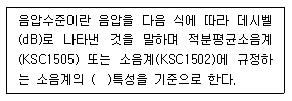
- A
- B
- C
- D
(정답률: 59%)
13. 무재해운동 추진기법 중 위험예지훈련 4라운드 기법에 해당하지 않는 것은?
- 현상파악
- 행동 목표설정
- 대책수립
- 안전평가
(정답률: 77%)
14. 다음 그림과 같은 안전관리 조직의 특징으로 틀린 것은?
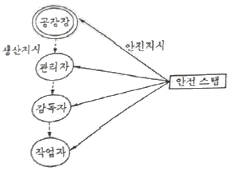
- 1000명 이상의 대규모 사업장에 적합하다.
- 생산부분은 안전에 대한 책임과 권한이 없다.
- 사업장의 특수성에 적합한 기술연구를 전문적으로 할 수 있다.
- 권한다툼이나 조정 때문에 통제수속이 복잡해지며, 시간과 노력이 소모된다.
(정답률: 62%)
15. 인간의 행동특성과 관련한 레빈의 법칙(Lewin)중 P가 의미하는 것은?
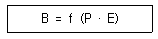
- 사람의 경험, 성격 등
- 인간의 행동
- 심리에 영향을 주는 인간관계
- 심리에 영향을 미치는 작업환경
(정답률: 79%)
16. 안전교육의 단계에 있어 교육대상자가 스스로 행함으로서 습득하게 하는 교육은?
- 의식교육
- 기능교육
- 지식교육
- 태도교육
(정답률: 77%)
17. 부주의의 현상으로 볼 수 없는 것은?
- 의식의 단절
- 의식수준 지속
- 의식의 과잉
- 의식의 우회
(정답률: 81%)
18. 산업안전보건법상 근로시간 연장의 제한에 관한 기준에서 아래의 ( )안에 알맞은 것은?
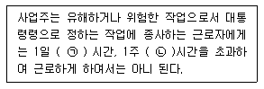
- ㉠ 6, ㉡ 34
- ㉠ 7, ㉡ 36
- ㉠ 8, ㉡ 40
- ㉠ 8, ㉡ 44
(정답률: 67%)
19. 일반적으로 시간의 변화에 따라 야간에 상승하는 생체리듬은?
- 맥박수
- 염분량
- 혈압
- 체중
(정답률: 85%)
20. 성인학습의 원리에 해당되지 않는 것은?
- 간접경험의 원리
- 자발학습의 원리
- 상호학습의 원리
- 참여교육의 원리
(정답률: 66%)
2과목: 인간공학 및 시스템안전공학
21. 설비보전을 평가하기 위한 식으로 틀린 것은?
- 성능가동률 = 속도가동률 × 정미가동률
- 시간가동률 = (부하시간 - 정지시간) / 부하시간
- 설비종합효율 = 시간가동률 × 성능가동률 × 양품률
- 정미가동률 = (생산량 × 기준주기시간) / 가동시간
(정답률: 51%)
22. “표시장치와 이에 대응하는 조종장치간의 위치 또는 배열이 인간의 기대와 모순되지 않아야 한다.”는 인간공학적 설계원리와 가장 관계가 같은 것은?
- 개념양립성
- 운동양립성
- 문화양립성
- 공간양립성
(정답률: 65%)
23. 다음 그림은 THERP 를 수행하는 예이다. 작업개시점 N1 에서부터 작업종점 N4까지 도달할 확률은? (단, P(Bi), i=1, 2, 3, 4는 해당 확률을 나타내며, 각 직무과오의 발생은 상호독립이라 가정한다.)
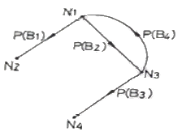
- 1 - P(B1)
- P(B2)ㆍP(B3)
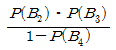
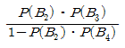
(정답률: 57%)
24. 격렬한 육체적 작업의 작업부담 평가 시 활용되는 주요 생리적 척도로만 이루어진 것은?
- 부정맥, 작업량
- 맥박수, 산소 소비량
- 점멸융합주파수, 폐활량
- 점멸융합주파수, 근전도
(정답률: 79%)
25. 산업안전보건기준에 관한 규칙상 작업장의 작업면에 따른 적정 조명 수준은 초정밀 작업에서 ( ㉠ )lux 이상이고, 보통작업에서는 ( ㉡ )lux 이상이다. ( )안에 들어갈 내용은?
- ㉠:650, ㉡:150
- ㉠:650, ㉡:250
- ㉠:750, ㉡:150
- ㉠:750, ㉡:250
(정답률: 75%)
26. 다음 그림과 같은 시스템의 신뢰도는 약 얼마인가? (단, 각각의 네모안의 수치는 각 공정의 신뢰도를 나타낸 것이다.)
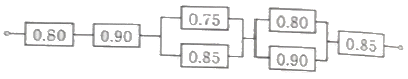
- 0.378
- 0.478
- 0.578
- 0.675
(정답률: 70%)
27. FTA 결과 다음과 같은 패스셋을 구하였다. X4가 중복사상인 경우, 최소 패스셋(minimal path sets)으로 맞는 것은?
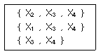
- {X3, X4}
- {X1, X3, X4}
- {X2, X3, X4}
- {X2, X3, X4}와 {X3, X4}
(정답률: 79%)
28. 인간 - 기계 통합 체계의 인간 또는 기계에 의해서 수행되는 기본기능의 유형에 해당하지 않는 것은?
- 감지
- 환경
- 행동
- 정보보관
(정답률: 72%)
29. 시스템의 운용단계에서 이루어져야 할 주요한 시스템안전 부문의 작업이 아닌 것은?
- 생산시스템 분석 및 효율성 검토
- 안전성 손상 없이 사용설명서의 변경과 수정을 평가
- 운용, 안전성 수준유지를 보증하기 위한 안전성 검사
- 운용, 보전 및 위급 시 절차를 평가하여 설계시 고려사항과 같은 타당성 여부 식별
(정답률: 43%)
30. 인체측정치의 응용원리에 해당하지 않는 것은?
- 조절식 설계
- 극단치 설계
- 평균치 설계
- 다차원식 설계
(정답률: 74%)
31. 산업안전보건법령상 유해ㆍ위험방지계획서의 심사 결과에 따른 구분ㆍ판정의 종류에 해당하지 않는 것은?
- 보류
- 부적정
- 적정
- 조건부 적정
(정답률: 74%)
32. 인간공학 연구조사에 사용되는 기준의 구비조건과 가장 거리가 먼 것은?
- 적절성
- 다양성
- 무오염성
- 기준 척도의 신뢰성
(정답률: 63%)
33. FTA에 대한 설명으로 틀린 것은?
- 정성적 분석만 가능하다.
- 하향식(top-down) 방법이다.
- 짧은 시간에 점검할 수 있다.
- 비전문가라도 쉽게 할 수 있다.
(정답률: 75%)
34. 4m 또는 그보다 먼 물체만을 잘 볼 수 있는 원시 안경은 몇 D 인가? (단, 명시거리는 25cm 로 한다.)
- 1.75D
- 2.75D
- 3.75D
- 4.75D
(정답률: 48%)
35. 작업공간 설계에 있어 “접근제한요건”에 대한 설명으로 맞는 것은?
- 조절식 의자와 같이 누구나 사용할 수 있도록 설계한다.
- 비상벨의 위치를 작업자의 신체조건에 맞추어 설계한다.
- 트럭운전이나 수리작업을 위한 공간을 확보하여 설계한다.
- 박물관의 미술품 전시와 같이, 장애물 뒤의 타겟과의 거리를 확보하여 설계한다.
(정답률: 81%)
36. 인간의 에러 중 불필요한 작업 또는 절차를 수행함으로써 기인한 에러를 무엇이라 하는가?
- Omission error
- Sequential error
- Extraneous error
- Commission error
(정답률: 66%)
37. FTA(Fault tree analysis)의 기호 중 다음의 사상기호에 적합한 각각의 명칭은?
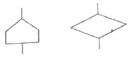
- 전이기호와 통상사상
- 통상사상과 생략사상
- 통상사상과 전이기호
- 생략사상과 전이기호
(정답률: 78%)
38. 화학설비에 대한 안전성 평가에서 정성적 평가 항목이 아닌 것은?
- 건조물
- 취급물질
- 공장내의 배치
- 입지조건
(정답률: 71%)
39. 청각에 관한 설명으로 틀린 것은?
- 인간에게 음의 높고 낮은 감각을 주는 것은 음의 진폭이다.
- 1000 Hz 순음의 가청최소음압을 음의 강도 표준치로 사용한다.
- 일반적으로 음이 한 옥타브 높아지면 진동수는 2배 높아진다.
- 복합음은 여러 주파수대의 강도를 표현한 주파수별 분포를 사용하여 나타낸다.
(정답률: 55%)
40. 초음파 소음(ultrasonic noise)에 대한 설명으로 잘못된 것은?
- 전형적으로 20000 Hz 이상이다.
- 가청영역 위의 주파수를 갖는 소음이다.
- 소음의 3dB 증가하면 허용기간은 반감한다.
- 20000 Hz 이상에서 노출 제한은 110 dB 이다.
(정답률: 60%)
3과목: 기계위험방지기술
41. 보일러에서 프라이밍(Priming)과 포오밍(Foaming)의 발생 원인으로 가장 거리가 먼 것은?
- 역화가 발생되었을 경우
- 기계적 결함이 있을 경우
- 보일러가 과부하로 사용될 경우
- 보일러 수에 불순물이 많이 포함되었을 경우
(정답률: 56%)
42. 허용응력이 1kN/mm2 이고, 단면적이 2mm2인 강판의 극한하중이 4000N이라면 안전율은 얼마인가?
- 2
- 4
- 5
- 50
(정답률: 65%)
43. 슬라이드 행정수가 100 spm 이하이거나, 행정길이가 50mm 이상의 프레스에 설치해야 하는 방호장치 방식은?
- 양수조작식
- 수인식
- 가드식
- 광전자식
(정답률: 52%)
44. “강렬한 소음작업”이라 함은 90dB이상의 소음이 1일 몇 시간 이상 발생되는 작업을 말하는가?
- 2시간
- 4시간
- 8시간
- 10시간
(정답률: 72%)
45. 보일러에서 압력이 규정 압력이상으로 상승하여 과열되는 원인으로 가장 관계가 적은 것은?
- 수관 및 본체의 청소 불량
- 관수가 부족할 때 보일러 가동
- 절탄기의 미부착
- 수면계의 고장으로 인한 드럼내의 물의 감소
(정답률: 76%)
46. 크레인에서 일반적인 권상용 와이어로프 및 권상용 체인의 안전율 기준은?
- 10 이상
- 2.7 이상
- 4 이상
- 5 이상
(정답률: 62%)
47. 컨베이어에 사용되는 방호장치와 그 목적에 관한 설명이 옳지 않은 것은?
- 운전 중인 컨베이어 등의 위로 넘어가고자 할 때를 위하여 급정지장치를 설치한다.
- 근로자의 신체 일부가 말려들 위험이 있을 때 이를 즉시 정지시키기 위한 비상정지장치를 설치한다.
- 정전, 전압강하 등에 따른 화물 이탈을 방지하기 위해 이탈 및 역주행 방지장치를 설치한다.
- 낙하물에 의한 위험 방지를 위한 덮개 또는 울을 설치한다.
(정답률: 74%)
48. 연삭숫돌의 지름이 20cm이고, 원주속도가 250m/min일 때 연삭숫돌의 회전수는 약 몇 rpm인가?
- 398
- 433
- 489
- 552
(정답률: 64%)
49. 범용 수동 선반의 방호조치에 관한 설명으로 옳지 않은 것은?
- 척 가드의 폭은 공작물의 가공작업에 방해가 되지 않는 범위 내에서 척 전체 길이를 방호할 수 있을 것
- 척 가드의 개방 시 스핀들의 작동이 정지되도록 연동회로를 구성할 것
- 전면 칩 가드의 폭은 새들 폭 이하로 설치할 것
- 전면 칩 가드는 심압대가 베드 끝단부에 위치하고 있고 공작물 고정 장치에서 심압대까지 가드를 연장시킬 수 없는 경우에는 부착위치를 조정할 수 있을 것
(정답률: 65%)
50. 다음 중 용접부에 발생한 미세균열, 용입부족, 융합불량의 검출에 가장 적합한 비파괴검사법은?
- 방사선투과 검사
- 침투탐상 검사
- 자분탐상 검사
- 초음파탐상 검사
(정답률: 53%)
51. 다음 설명에 해당하는 기계는?
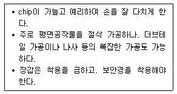
- 선반
- 호방 머신
- 연삭기
- 밀링
(정답률: 60%)
52. 취성재료의 극한강도가 128MPa이며, 허용응력이 64MPa일 경우 안전계수는?
- 1
- 2
- 4
- 1/2
(정답률: 82%)
53. 프레스기에 금형 설치 및 조정 작업 시 준수 하여야 할 안전수칙으로 틀린 것은?
- 금형을 부착하기 전에 하사점을 확인한다.
- 금형의 체결은 올바른 치공구를 사용하고 균등하게 체결한다.
- 금형은 하형부터 잡고 무거운 금형의 받침은 인력으로 하지 않는다.
- 슬라이드의 불시하강을 방지하기 위하여 안전블록을 제거한다.
(정답률: 82%)
54. 컨베이어 작업시작 전 점검사항에 해당하지 않는 것은?
- 브레이크 및 클러치 기능의 이상 유무
- 비상정지장치 기능의 이상 유무
- 이탈 등의 방지장치 기능의 이상 유무
- 원동기 및 풀리 기능의 이상 유무
(정답률: 60%)
55. 크레인의 방호장치에 대한 설명으로 틀린 것은?
- 권과방지장치를 설치하지 않은 크레인에 대해서는 권상용 와이어로프에 위험표시를 하고 경보장치를 설치하는 등 권상용 와이어로프가 지나치게 감겨서 근로자가 위험해질 상황을 방지하기 위한 조치를 하여야 한다.
- 운반물의 중량이 초과되지 않도록 과부하방지장치를 설치하여야 한다.
- 크레인을 필요한 상황에서는 저속으로 중지시킬 수 있도록 브레이크장치와 충돌 시 충격을 완화시킬 수 있는 완충장치를 설치한다.
- 작업 중에 이상발견 또는 긴급히 정지시켜야 할 경우에는 비상정지장치를 사용할 수 있도록 설치하여야 한다.
(정답률: 67%)
56. 프레스의 작업 시작 전 점검 사항이 아닌 것은?
- 권과방지장치 및 그 밖의 경보장치의 기능
- 슬라이드 또는 칼날에 의한 위험방지 기구의 기능
- 프레스기의 금형 및 고정볼트 상태
- 전단기의 칼날 및 테이블의 상태
(정답률: 72%)
57. 보일러에서 압력방출장치가 2개 설치된 경우 최고 사용압력이 1MPa일 때 압력방출장치의 설정 방법으로 가장 옳은 것은?
- 2개 모두 1.1MPa 이하에서 작동되도록 설정하였다.
- 하나는 1MPa 이하에서 작동되고 나머지는 1.1MPa 이하에서 작동되도록 설정하였다.
- 하나는 1MPa 이하에서 작동되고 나머지는 1.⑤MPa 이하에서 작동되도록 설정하였다.
- 2개 모두 1.⑤MPa 이하에서 작동되도록 설정하였다.
(정답률: 76%)
58. 다음 중 롤러기에 설치하여야 할 방호장치는?
- 반발예방장치
- 급정지장치
- 접촉예방장치
- 파열판장치
(정답률: 63%)
59. 연삭기의 숫돌 지름이 300 mm 일 경우 평형 플랜지의 지름은 몇 mm 이상으로 해야 하는가?
- 50
- 100
- 150
- 200
(정답률: 80%)
60. 기계설비에 대한 본질적인 안전화 방안의 하나인 풀 프루프(Fool Proof)에 관한 설명으로 거리가 먼 것은?
- 계기나 표시를 보기 쉽게 하거나 이른바 인체공학적 설계도 넓은 의미의 풀 프루프에 해당된다.
- 설비 및 기계장치 일부가 고장이 난 경우 기능의 저하는 가져오나 전체기능은 정지하지 않는다.
- 인간이 에러를 일으키기 어려운 구조나 기능을 가진다.
- 조작순서가 잘못되어도 올바르게 작동한다.
(정답률: 53%)
4과목: 전기위험방지기술
61. 인체의 손과 발사이에 과도전류를 인가한 경우에 파두장 700μs에 따른 전류파고치의 최대값은 약 몇 mA 이하 인가?
- 4
- 40
- 400
- 800
(정답률: 56%)
62. 고압 및 특고압의 전로에 시설하는 피뢰기에 접지공사를 할 때 접지저항의 최대값은 몇 Ω이하로 해야 하는가?(오류 신고가 접수된 문제입니다. 반드시 정답과 해설을 확인하시기 바랍니다.)
- 100
- 20
- 10
- 5
(정답률: 65%)
63. 욕실 등 물기가 많은 장소에서 인체감전보호형 누전차단기의 정격감도전류와 동작시간은?
- 정격감도전류 30mA, 동작시간 0.01 초 이내
- 정격감도전류 30mA, 동작시간 0.03초 이내
- 정격감도전류 15mA, 동작시간 0.01 초 이내
- 정격감도전류 15mA, 동작시간 0.03 초 이내
(정답률: 60%)
64. 다음 중 전압을 구분할 것으로 알맞은 것은?(관련 규정 개정전 문제로 여기서는 기존 정답인 3번을 누르면 정답 처리됩니다. 자세한 내용은 해설을 참고하세요.)
- 저압이란 교류 600V 이하, 직류는 교류의 교류의 루트2배 이하인 전압을 말한다.
- 고압이란 교류 7000V 이하, 직류 7500V 이하의 전압을 말한다.
- 특고압이란 교류, 직류 모두 7000V를 초과하는 전압을 말한다.
- 고압이란 교류, 직류 모두 7500V를 넘지 않는 전압을 말한다.
(정답률: 76%)
65. 단로기를 사용하는 주된 목적은?
- 과부하 차단
- 변성기의 개폐
- 이상전압의 차단
- 무부하 선로의 개폐
(정답률: 61%)
66. 전격의 위험을 결정하는 주된 인자로 가장 거리가 먼 것은?
- 통전전류
- 통전시간
- 통전경로
- 통전전압
(정답률: 74%)
67. 감전되어 사망하는 주된 메커니즘으로 틀린 것은?
- 심장부에 전류가 흘러 심실세동이 발생하여 혈액순환기능이 상실되어 일어난 것
- 흉골에 전류가 흘러 혈압이 약해져 뇌에 산소 공급기능이 정지되어 일어난 것
- 뇌의 호흡중추 신경에 전류가 흘러 호흡기능이 정지되어 일어난 것
- 흉부에 전류가 흘러 흉부수축에 의한 질식으로 일어난 것
(정답률: 63%)
68. 다음은 전기안전에 관한 일반적인 사항을 기술한 것이다. 옳게 설명된 것은?(오류 신고가 접수된 문제입니다. 반드시 정답과 해설을 확인하시기 바랍니다.)
- 200V 동력용 전동기의 외함에 특별 제3종 접지공사를 하였다.
- 배선에 사용할 전선의 굵기를 허용전류, 기계적강도, 전압강하 등을 고려하여 결정하였다.
- 누전을 방지하기 위해 피뢰침 설비를 설치하였다.
- 전선 접속시 전선의 세기가 30% 이상 감소되었다.
(정답률: 57%)
69. 정격사용률이 30%, 정격2차전류가 300A인 교류아크 용접기를 200A로 사용하는 경우의 허용사용률(%)은?
- 67.5
- 91.6
- 110.3
- 130.5
(정답률: 59%)
70. 어느 변전소에서 고장전류가 유입되었을 때 도전성구조물과 그 부근 지표상의 점과의 사이(약 1m)의 허용접촉전압은 약 몇 V 인가? (단, 심실세동전류:
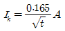
, 인체의 저항: 1000Ω, 지표면의 저항률: 150Ωㆍm, 통전시간을 1초로 한다.)- 202
- 186
- 228
- 164
(정답률: 38%)
71. 아크용접 작업 시 감전사고 방지대책으로 틀린 것은?
- 절연 장갑의 사용
- 절연 용접봉의 사용
- 적정한 케이블의 사용
- 절연 용접봉의 홀더의 사용
(정답률: 58%)
72. 인체저항에 대한 설명으로 옳지 않은 것은?
- 인체저항은 접촉면적에 따라 변한다.
- 피부저항은 물에 젖어 있는 경우 건조시의 약 1/12로 저하된다.
- 인체저항은 한 개의 단일 저항체로 보아 최악의 상태를 적용한다.
- 인체에 전압이 인가되면 체내로 전류가 흐르게 되어 전격의 정도를 결정한다.
(정답률: 57%)
73. 저압방폭전기의 배관방법에 대한 설명으로 틀린 것은?
- 전선관용 부속품은 방폭구조에 정한 것을 사용한다.
- 전선관용 부속품은 유효 접속면의 깊이를 5mm 이상 되도록 한다.
- 배선에서 케이블의 표면온도가 대상하는 발화온도에 충분한 여유가 있도록 한다.
- 가요성 피팅(Fitting)은 방폭 구조를 이용하되 내측 반경을 5배 이상으로 한다.
(정답률: 46%)
74. Freiberger가 제시한 인체의 전기적 등가회로는 다음 중 어느 것인가? (단, 단위는 다음과 같다. 단위: R(Ω), L(H), C(F))
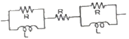
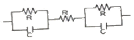
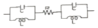
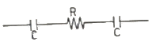
(정답률: 58%)
75. 전동기용 퓨즈 사용 목적으로 알맞은 것은?
- 과전압 차단
- 누설전류 차단
- 지락과전류 차단
- 회로에 흐르는 과전류 차단
(정답률: 63%)
76. 누전으로 인한 화재의 3요소에 대한 요건이 아닌 것은?
- 접속점
- 출화점
- 누전점
- 접지점
(정답률: 36%)
77. 교류아크 용접기의 자동전격 방지장치란 용접기의 2차전압을 25V 이하로 자동조절하여 안전을 도모하려는 것이다. 다음 사항 중 어떤 시점에서 그 기능이 발휘 되어야 하는가?
- 전체 작업시간 동안
- 아크를 발생시킬 때만
- 용접작업을 진행하고 있는 동안만
- 용접작업 중단 직후부터 다음 아크 발생 시 까지
(정답률: 71%)
78. 누전차단기를 설치하여야 하는 곳은?
- 기계기구를 건조한 장소에 시설한 경우
- 대지전압이 220V에서 기계기구를 물기가 없는 장소에 시설한 경우
- 전기용품안전 관리법의 적용을 받는 2중 절연구조의 기계기구
- 전원측에 절연변압기(2차 전압이 300V 이하)를 시설한 경우
(정답률: 53%)
79. 방폭구조와 기호의 연결이 틀린 것은?
- 압력방폭구조 : p
- 내압방폭구조 : d
- 안전증방폭구조 : s
- 본질안전방폭구조 : ia 또는 ib
(정답률: 73%)
80. 전격에 의해 심실세동이 일어날 확률이 가장 큰 심장 맥동주기 파형의 설명으로 옳은 것은? (단, 심장 맥동주기를 심전도에서 보았을 때의 파형이다.)
- 심실의 수축에 따른 파형이다.
- 심실의 팽창에 따른 파형이다.
- 심실의 수축 종료 후 심실의 휴식 시 발생하는 파형이다.
- 심실의 수축 시작 후 심실의 휴식 시 발생하는 파형이다.
(정답률: 77%)
5과목: 화학설비위험방지기술
81. 다음 중 마그네슘의 저장 및 취급에 관한 설명으로 틀린 것은?
- 산화제와 접촉을 피한다.
- 고온의 물이나 과열 수증기와 접촉하면 격렬히 반응하므로 주의한다.
- 분말은 분진폭발성이 있으므로 누설되지 않도록 포장한다.
- 화재발생시 물의 사용을 금하고, 이산화탄소소화기를 사용하여야 한다.
(정답률: 61%)
82. 다음 중 상온에서 물과 격렬히 반응하여 수소를 발생시키는 물질은?
- Au
- K
- S
- Ag
(정답률: 71%)
83. 산업안전보건법령상 안전밸브 등의 전단ㆍ후단에는 차단밸브를 설치하여서는 아니되지만 다음 중 자물쇠형 또는 이에 준하는 형식의 차단밸브를 설치할 수 있는 경우로 틀린 것은?
- 인접한 화학설비 및 그 부속설비에 안전밸브 등이 각각 설치되어 있고, 해당 화학설비 및 그 부속설비의 연결배관에 차단밸브가 없는 경우
- 안전밸브 등의 배출용량의 4분의 1 이상에 해당하는 용량의 자동압력조절밸브와 안전밸브 등이 직렬로 연결된 경우
- 화학설비 및 그 부속설비에 안전밸브 등이 복수방식으로 설치되어 있는 경우
- 열팽창에 의하여 상승된 압력을 낮추기 위한 목적으로 안전밸브가 설치된 경우
(정답률: 61%)
84. 압축기와 송풍의 관로에 심한 공기의 맥동과 진동을 발생하면서 불안정한 운전이 되는 서어징(surging) 현상의 방지법으로 옳지 않은 것은?
- 풍량을 감소시킨다.
- 배관의 경사를 완만하게 한다.
- 교축밸브를 기계에서 멀리 설치한다.
- 토출가스를 흡입측에 바이패스 시키거나 방출밸브에 의해 대기로 방출시킨다.
(정답률: 73%)
85. (보기) 의 물질을 폭발 범위가 넓은 것부터 좁은 순서로 바르게 배열한 것은?
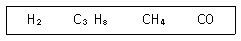
- CO>H2>C3H8>CH4
- H2>CO>CH4>C3H8
- C3H8>CO>CH4>H2
- CH4>H2>CO>C3H8
(정답률: 67%)
86. 다음 중 산업안전보건법령상 위험물질의 종류와 해당 물질이 올바르게 연결된 것은?
- 부식성 산류 - 아세트산(농도 90%
- 부식성 염기류 - 아세톤(농도 90%)
- 인화성 가스 - 이황화탄소
- 인화성 가스 - 수산화칼륨
(정답률: 51%)
87. 다음 중 화재 시 주수에 의해 오히려 위험성이 증대되는 물질은?
- 황린
- 니트로셀룰로오스
- 적린
- 금속나트륨
(정답률: 64%)
88. 물과 탄화칼슘이 반응하면 어떤 가스가 생성되는가?
- 염소가스
- 아황산가스
- 수성가스
- 아세틸렌가스
(정답률: 63%)
89. 다음 중 분진폭발에 관한 설명으로 틀린 것은?
- 가스폭발에 비교하여 연소시간이 짧고, 발생에너지가 작다.
- 최초의 부분적인 폭발이 분진의 비산으로 2차, 3차 폭발로 파급되어 피해가 커진다.
- 가스에 비하여 불완전 연소를 일으키기 쉬우므로 연소 후 가스에 의한 중독 위험이 있다.
- 폭발시 입자가 비산하므로 이것에 부딪치는 가연물로 국부적으로 탄화를 일으킬 수 있다.
(정답률: 73%)
90. 다음 물질 중 인화점이 가장 낮은 물질은?
- 이황화탄소
- 아세톤
- 크실렌
- 경유
(정답률: 68%)
91. 다음의 2가지 물질을 혼합 또는 접촉하였을 때 발화 또는 폭발의 위험성이 가장 낮은 것은?
- 니트로셀룰로오스와 물
- 나트륨과 물
- 염소산칼륨과 유황
- 황화인과 무기과산화물
(정답률: 55%)
92. 폭발을 기상폭발과 응상폭발로 분류할 때 다음 중 기상폭발에 해당되지 않는 것은?
- 분진폭발
- 혼합가스폭발
- 분무폭발
- 수증기폭발
(정답률: 65%)
93. 다음 물질 중 공기에서 폭발상한계 값이 가장 큰 것은?
- 사이클로헥산
- 산화에틸렌
- 수소
- 이황화탄소
(정답률: 37%)
94. 다음 중 관의 지름을 변경하고자 할 때 필요한 관 부속품은?
- reducer
- elbow
- plug
- valve
(정답률: 77%)
95. 다음 중 자연발화에 대한 설명으로 틀린 것은?
- 분해열에 의해 자연발화가 발생할 수 있다.
- 입자의 표면적이 넓을수록 자연발화가 발생하기 쉽다.
- 자연발화가 발생하지 않기 위해 습도를 가능한 한 높게 유지시킨다.
- 열의 축적은 자연발화를 일으킬 수 있는 인자이다.
(정답률: 71%)
96. 반응성 화학물질의 위험성은 실험에 의한 평가 대신 문헌조사 등을 통해 계산에 의해 평가하는 방법을 사용할 수 있다. 이에 관한 설명으로 옳지 않은 것은?
- 위험성이 너무 커서 물성을 측정할 수 없는 경우 계산에 의한 평가 방법을 사용할 수도 있다.
- 연소열, 분해열, 폭발열 등의 크기에 의해 그 물질의 폭발 도는 발화의 위험예측이 가능하다.
- 계산에 의한 평가를 하기 위해서는 폭발 또는 분해에 다른 생성물의 예측이 이루어져야 한다.
- 계산에 의한 위험성 예측은 모든 물질에 대해 정확성이 있으므로 더 이상의 실험을 필요로 하지 않는다.
(정답률: 81%)
97. 메탄(CH4) 70vol%, 부탄(C4H10) 30vol% 혼합가스의 25℃, 대기압에서의 공기 중 폭발하한계(vol%)는 약 얼마인가? (단, 각 물질의 폭발하한계는 다음 식을 이용하여 추정, 계산한다.)
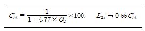
- 1.2
- 3.2
- 5.7
- 7.7
(정답률: 46%)
98. 다음 중 완전연소조성농도가 가장 낮은 것은?
- 메탄(CH4)
- 프로판(C3H8)
- 부탄(C4H10)
- 아세틸렌(C2H2)
(정답률: 36%)
99. 유체의 역류를 방지하기 위해 설치하는 밸브는?
- 체크밸브
- 게이트밸브
- 대기밸브
- 글로브밸브
(정답률: 70%)
100. 산업안전보건법령상 위험물질의 종류를 구분할 때 다음 물질들이 해당하는 것은?
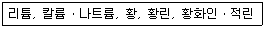
- 폭발성 물질 및 유기과산화물
- 산화성 액체 및 산화성 고체
- 물반응성 물질 및 인화성 고체
- 급성 독성 물질
(정답률: 74%)
6과목: 건설안전기술
101. 산업안전보건관리비계상기준에 따른 일반건설공사(갑), 대상액「5억원 이상~50억원 미만」 의 비율 및 기초액으로 옳은 것은?
- 비율 : 1.86%, 기초액 : 5,349,000원
- 비율 : 1.99%, 기초액 : 5,499,000원
- 비율 : 2.35%, 기초액 : 5,400,000원
- 비율 : 1.57%, 기초액 : 4,411,000원
(정답률: 72%)
102. 이동식비계를 조립하여 작업을 하는 경우에 대한 준수사항으로 옳지 않은 것은?
- 승강용사다리는 견고하게 설치할 것
- 비계의 최상부에서 작업을 하는 경우에는 안전난간을 설치할 것
- 작업발판의 최대 적재하중은 400kg을 초과하지 않도록 할 것
- 작업발판은 항상 수평을 유지하고 작업발판 위에서 안전난간을 딛고 작업을 하거나 받침대 또는 사다리를 사용하여 작업하지 않도록 할 것
(정답률: 74%)
103. 항타기 또는 항발기의 권상용 와이어로프의 절단하중이 100ton일 때 와이어로프에 걸리는 최대하중을 얼마가지 할 수 있는가?
- 20 ton
- 33.3 ton
- 40 ton
- 50 ton
(정답률: 55%)
104. 공사현장에서 가설계단을 설치하는 경우 높이가 3m를 초과하는 계단에는 높이 3m 이내마다 최소 얼마 이상의 너비를 가진 계단참을 설치하여야 하는가?
- 3.5m
- 2.5m
- 1.2m
- 1.0m
(정답률: 49%)
1⑤. 터널 지보공을 조립하는 경우에는 미리 그 구조를 검토한 후 조립도를 작성하고, 그 조립도에 따라 조립하도록 하여야 하는데 이 조립도에 명시하여야할 사항과 가장 거리가 먼 것은?
- 이음방법
- 단면규격
- 재료의 재질
- 재료의 구입처
(정답률: 80%)
106. 강관비계를 조립할 때 준수하여야 할 사항으로 옳지 않은 것은?(관련 규정 개정전 문제로 여기서는 기존 정답인 1번을 누르면 정답 처리됩니다. 자세한 내용은 해설을 참고하세요.)
- 띠장간격은 2m 이하로 설치하되, 첫번째 띠장은 지상으로부터 3m 이하의 위치에 설치할 것
- 비계기둥의 간격은 띠장 방향에서 1.5m 이상 1.8m 이하로 할 것
- 비계기둥의 제일 윗부분으로부터 31m 되는 지점 밑부분의 비계기둥은 2개의 강관으로 묶어 세울 것
- 비계기둥 간의 적재하중은 400kg을 초과하지 않도록 할 것
(정답률: 74%)
107. 작업장소의 지형 및 지반 상태 등에 적합한 제한속도를 미리 정하지 않아도 되는 차량계 건설기계는 최대 제한속도가 최대 시속 얼마이하인 것을 의미하는가?
- 5 km/hr 이하
- 10 km/hr 이하
- 15 km/hr 이하
- 20 km/hr 이하
(정답률: 74%)
108. 산업안전보건법령에 다른 유해하거나 위험한 기계ㆍ기구에 설치하여야 할 방호장치를 연결한 것으로 옳지 않은 것은?
- 포장기계 - 헤드 가드
- 예초기 - 날접촉 예방장치
- 원심기 - 회전체 접촉 예방장치
- 금속절단기 - 날접촉 예방장치
(정답률: 70%)
109. 지반조사의 간격 및 깊이에 대한 내용으로 옳지 않은 것은?
- 조사간격은 지층상태, 구조물 규모에 따라 정한다.
- 절토, 개착, 터널구간은 기반암의 심도 5~6m 까지 확인한다.
- 지층이 복잡한 경우에는 기 조사한 간격사이에 보완조사를 실시한다.
- 조사깊이는 액상화문제가 있는 경우에는 모래층하단에 있는 단단한 지지층까지 조사한다.
(정답률: 64%)
110. 보일링(Boiling) 현상에 관한 설명으로 옳지 않은 것은?
- 지하수위가 높은 모래 지반을 굴착할 때 발생하는 현상이다.
- 보일링 현상에 대한 대책의 일환으로 공사기간 중 지하수위를 일정하게 유지시켜야 한다.
- 보일링 현상이 발생하는 경우 흙막이 보는 지지력이 저하된다.
- 아랫 부분의 토사가 수압을 받아 굴착한 곳으로 밀려나와 굴착부분을 다시 메우는 현상이다.
(정답률: 44%)
111. 철골구조의 앵커볼트매립과 관련된 준수사항 중 옳지 않은 것은?
- 기둥중심은 기준선 및 인접기둥의 중심에서 3mm 이상 벗어나지 않을 것
- 앵커 볼트는 매립 후에 수정하지 않도록 설치할 것
- 베이스플레이트의 하단은 기준 높이 및 인접기둥의 높이에서 3mm 이상 벗어나지 않을 것
- 앵커 볼트는 기둥중심에서 2mm 이상 벗어나지 않을 것
(정답률: 32%)
112. 토사붕괴 재해를 방지하기 위한 흙막기 지보공설비를 구성하는 부재와 거리가 먼 것은?
- 말뚝
- 버팀대
- 띠장
- 턴버클
(정답률: 72%)
113. 옥외에 설치되어 있는 주행크레인에 대하여 이탈방지장치를 작동시키는 등 이탈 방지를 위한 조치를 하여야 하는 풍속기준으로 옳은 것은?
- 순간풍속이 20m/sec를 초과할 때
- 순간풍속이 25m/sec를 초과할 때
- 순간풍속이 30m/sec를 초과할 때
- 순간풍속이 35m/sec를 초과할 때
(정답률: 58%)
114. 비계(달비계, 달대비계 및 말비계는 제외)의 높이가 2m 이상인 작업장소에 설치하는 작업방판의 구조 및 설비에 관한 기준으로 옳지 않은 것은?
- 작업발판의 폭이 40cm 이상이 되도록 한다.
- 발판재료 간의 틈은 3cm 이하로 한다.
- 작업발판을 작업에 다라 이동시킬 경우에는 위험 방지에 필요한 조치를 한다.
- 작업발판재료는 뒤집히거나 떨어지지 않도록 하나 이상의 지지물에 연결하거나 고정시킨다.
(정답률: 69%)
115. 차량계 하역운반기계등에 화물을 적재하는 경우의 준수사항이 아닌 것은?
- 하중이 한쪽으로 치우치지 않도록 적재할 것
- 구내운반차 또는 화물자동차의 경우 화물의 붕괴 또는 낙하에 의한 위험을 방지하기 위하여 화물에 로프를 거는 등 필요한 조치를 할 것
- 운전자의 시야를 가리지 않도록 화물을 적재할 것
- 차륜의 이상 유무를 점검할 것
(정답률: 69%)
116. 이동식 비계를 조립하여 작업을 하는 경우에 작업발판의 최대적재하중은 몇 kg을 초과하지 않도록 해야 하는가?
- 150kg
- 200kg
- 250kg
- 300kg
(정답률: 61%)
117. 취급ㆍ운반의 원칙으로 옳지 않은 것은?
- 연속운반을 할 것
- 생산을 최고로 하는 운반을 생각할 것
- 운반작업을 집중하여 시킬 것
- 곡선운반을 할 것
(정답률: 73%)
118. 건설현장에서 작업 중 물체가 떨어지거나 날아올 우려가 있는 경우에 대한 안전조치에 해당하지 않는 것은?
- 수직보호망 설치
- 방호선반 설치
- 울타리설치
- 낙하물 방지망 설치
(정답률: 65%)
119. 유해위험방지계획서를 제출해야 할 건설공사 대상 사업장 기준으로 옳지 않은 것은?
- 최대 지간길이가 40m 이상인 교량건설 등의 공사
- 지상높이가 31m 이상인 건축물
- 터널 건설등의 공사
- 깊이 10m 이상인 굴착공사
(정답률: 78%)
120. 콘크리트 타설을 위한 거푸집동바리의 구조검토 시 가장 선행되어야 할 작업은?
- 각 부재에 생기는 응력에 대하여 안전한 단면을 산정한다.
- 가설물에 작용하는 하중 및 외력의 종류, 크기를 산정한다.
- 하중ㆍ외력에 의하여 각 부재에 생기는 응력을 구한다.
- 사용할 거푸집 동바리의 설치간격을 결정한다.
(정답률: 63%)
종합재해지수 = (재해발생건수 / 총 근로시간수) x 1,000,000 x 강도율
따라서, A 사업장의 종합재해지수는
(12 / 1,200,000) x 1,000,000 x 2.5 = 5.0
이 된다. 즉, A 사업장의 종합재해지수는 5.0이다.